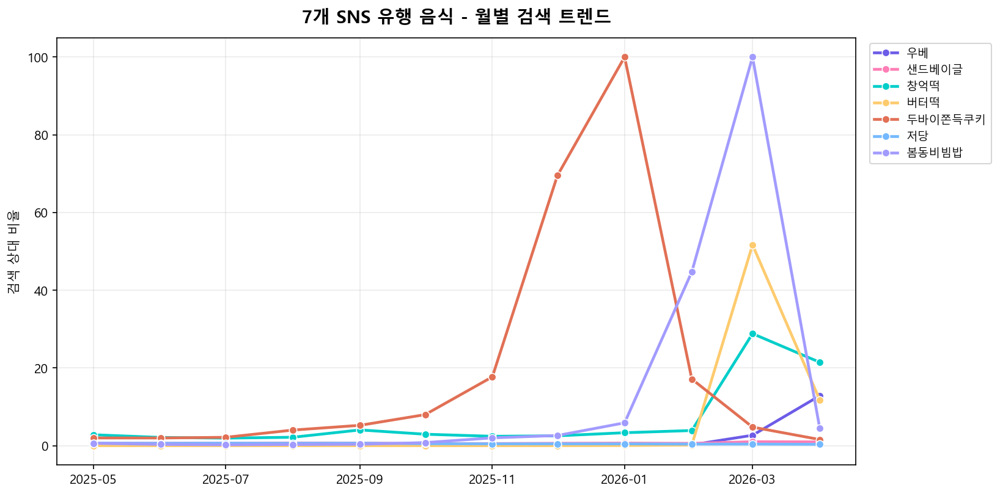
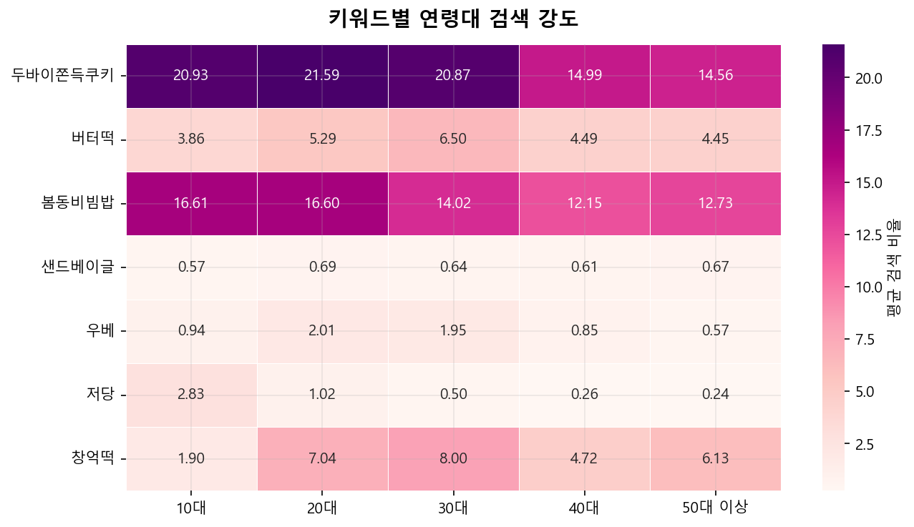
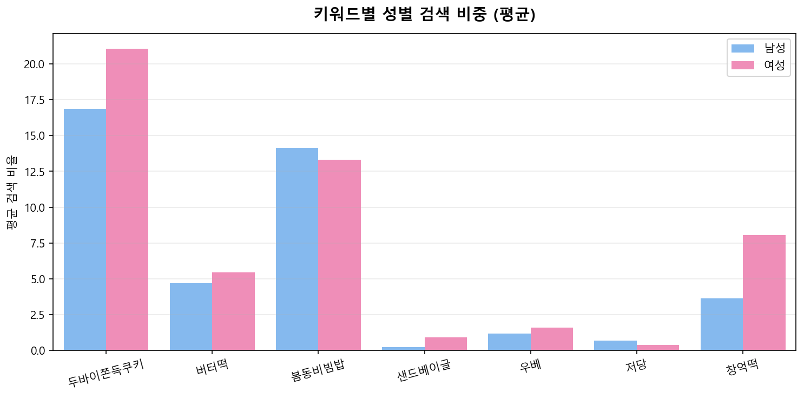
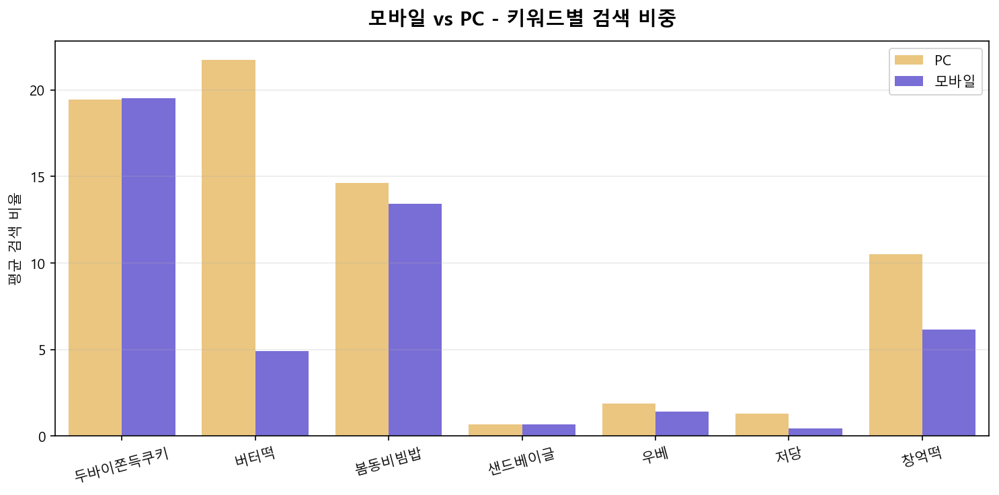

그래프 #1 · 7개 음식 종합 시계열
완료
2026 SNS 인기 음식의 검색 패턴을 해부하다
우베, 샌드베이글, 창억떡, 버터떡, 두바이쫀득쿠키, 저당, 봄동비빔밥 —
네이버 검색 데이터로 7개 SNS 유행템을 누가, 언제, 어떻게 검색했는지 분석합니다.
7개 SNS 유행 음식의 12개월 검색 흐름. 어떤 음식이 언제 폭발했는지 한눈에.

"누가 SNS 유행 음식을 검색하는가" - 연령·성별·기기로 해부.



7개 음식 각각의 검색 DNA를 분석. 어떤 음식이 어떤 패턴을 가지는지.
7개 키워드 모두에서 20~30대 연령대 검색 비중이 우세. 모바일 검색 점유율이 PC 대비 80% 이상.
색감과 인증샷 친화적인 음식일수록 어린 연령대와 여성 검색이 두드러짐.
전통 식문화에서 출발한 유행은 연령대가 더 넓게 분포 → 가족 단위 확산 가능성.
다른 키워드들과 달리 변동성이 적고 지속적 증가 패턴 관찰.
7개 음식의 검색 DNA에서 추출한 "유행 공식"으로 2026 하반기 차기 유행 후보 예측.
비주얼 임팩트 × 모바일 친화도 × 20·30대 도달률 × SNS 확산성